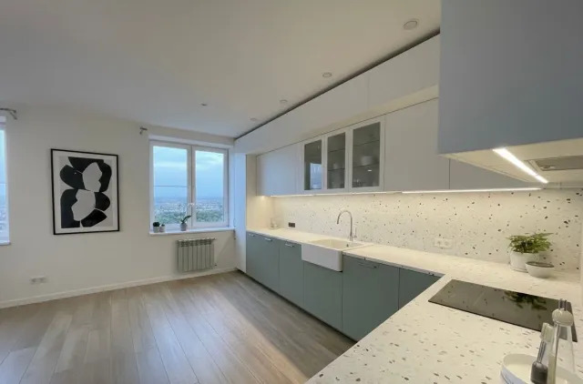
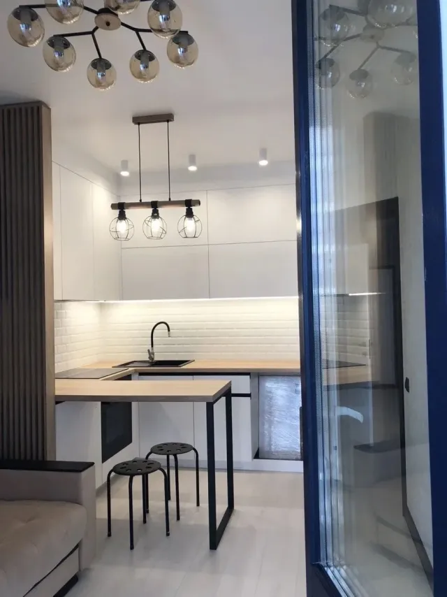

Rénovation et pose
de cuisine
Cuisine équipée ou sur mesure, avec plomberie, électricité, plan de travail et revêtements assortis : tous les métiers de la cuisine coordonnés par un seul interlocuteur.


Cuisine équipée ou sur mesure, avec plomberie, électricité, plan de travail et revêtements assortis : tous les métiers de la cuisine coordonnés par un seul interlocuteur.
Dans une cuisine, les meubles ne sont que la partie visible. Ce qui fait qu'elle fonctionne bien, c'est l'emplacement des arrivées d'eau, la puissance électrique disponible, la place de la hotte et la circulation autour de l'évier, de la plaque et du réfrigérateur. Tout cela se décide sur plan, avant que le premier meuble ne soit commandé.
Nous posons des cuisines équipées et semi-équipées, et réalisons des îlots et des plans de travail sur mesure. Nous reprenons aussi les réseaux, le sol et la crédence pour que le résultat soit cohérent de bout en bout, sans avoir à coordonner vous-même un plombier, un électricien et un carreleur.
Pour un plan de travail ou un îlot sans joint, le béton ciré fabriqué dans notre atelier est une option durable et entièrement sur mesure.
Nous vérifions les cotes sur place, posons les meubles de niveau et ajustons les finitions : plinthes, joues, façades, poignées.
Arrivée d'eau, évacuation de l'évier et du lave-vaisselle sont déplacées ou reprises selon le nouveau plan de la pièce.
Plaque, four, lave-vaisselle et réfrigérateur demandent des circuits dédiés. L'éclairage sous meuble et les prises de plan de travail se positionnent avant la pose.
Stratifié, pierre, quartz ou béton ciré : le plan de travail est découpé et posé aux cotes exactes, avec la crédence assortie.
La pose proprement dite n'occupe que quelques jours. L'essentiel du chantier est ce qui la précède et ce qui la suit.
Nous relevons la pièce, les arrivées d'eau, les évacuations, les circuits électriques et les contraintes de ventilation. Nous validons ensemble l'implantation avant toute commande.
Devis détaillé sous 24h ouvrées. La cuisine, l'électroménager et le plan de travail se commandent à ce stade : leurs délais fixent la date de démarrage.
Dépose de l'ancienne cuisine, reprise de l'eau, des évacuations et de l'électricité, remise en état des murs et du sol avant la pose.
Les meubles sont posés et mis de niveau. Le plan de travail est mesuré une fois les meubles en place, puis découpé et posé, avec évier et plaque.
Crédence, joints, raccordement de l'électroménager et de la hotte, essais, nettoyage. Nous vérifions chaque tiroir et chaque porte avec vous.
Ces fourchettes concernent la pose et les ouvrages associés. Le prix des meubles et de l'électroménager dépend de la gamme choisie et s'ajoute selon votre sélection.
| Prestation | Fourchette HT |
|---|---|
| Pose de cuisine/ ml | 350 € – 900 € |
| Plan de travail/ ml | 120 € – 1 500 € |
| Îlot/ unité | 1 800 € – 7 000 € |
| Cuisine complète/ m² | 900 € – 2 500 € |
Ce sont les décisions que nous regardons en premier lors de la visite, parce qu'elles sont presque impossibles à corriger une fois la cuisine posée.
Autour d'un îlot, comptez environ quatre-vingt-dix centimètres de passage pour circuler et ouvrir les portes sans se gêner. Si la pièce ne le permet pas, une péninsule ou une table adossée est souvent plus pertinente qu'un îlot isolé.
Une hotte à évacuation extérieure est plus efficace qu'une hotte à recyclage, mais elle exige un conduit. En immeuble, ce conduit est parfois impossible : mieux vaut le savoir avant de choisir la cuisine.
Le plan de travail se mesure une fois les meubles posés et de niveau, jamais sur plan. Un écart de quelques millimètres sur un mur non d'équerre se voit ensuite à chaque joint.
Four, plaque, lave-vaisselle et lave-linge demandent chacun un circuit dédié. Dans un logement ancien, le tableau électrique doit parfois être renforcé : c'est un poste à anticiper dans le budget.
Deux cuisines de nos chantiers. Retrouvez toutes nos réalisations.


Délais, îlot, plan de travail, électricité : les points à connaître avant de rénover une cuisine.
Visite sur site et devis détaillé gratuits. Réponse sous 24h.